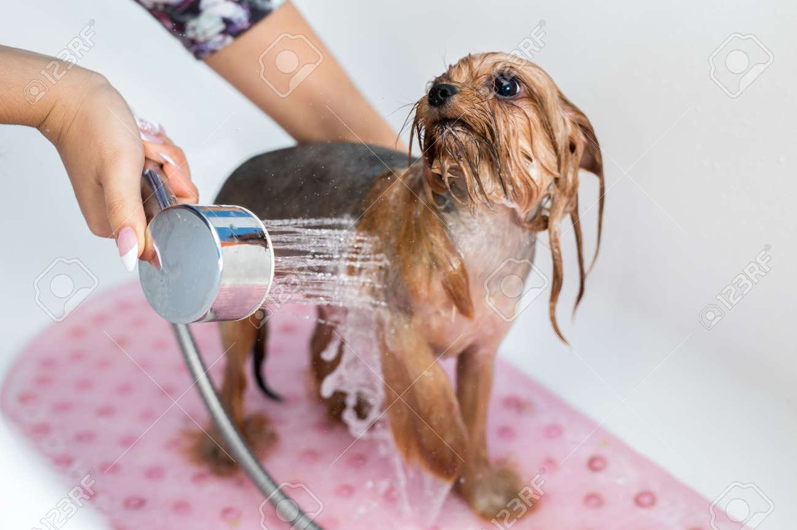
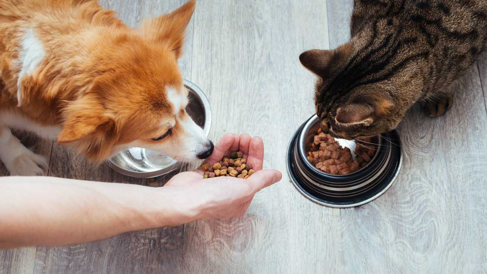

Cuidado de Animales

"Nos preocupamos por el bienestar y la salud de todos los animales. El cuidado adecuado de nuestras mascotas y animales de compañía es esencial para garantizar su felicidad y calidad de vida. Desde proporcionarles una dieta equilibrada y ejercicio regular hasta brindarles amor y atención, cada aspecto del cuidado animal es importante. Explora nuestros consejos y recursos sobre cuidado animal para aprender cómo mantener a tus amigos peludos felices y saludables.".
 